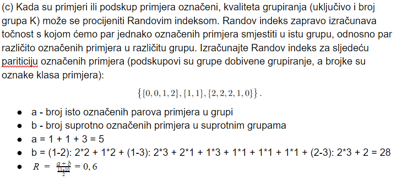
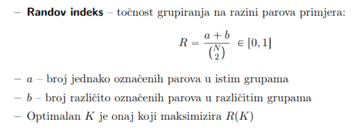

7.b) “Raspolažemo manjim skupom od 7 primjera (x1,…,x7). Referentno grupiranje ovih primjera grupe definirano je vektorom pridjeljivanja primjera grupama x(i) |-> j: (1,2,1,3,4,4,1). Algoritmom k-medoida dobiveno je grupiranje (2,2,1,1,2,3,1). (Dakle, 4. primjer je u referentnom grupiranju član grupe 3, dok je u dobivenom grupiranju član grupe 1) Izračunaj Randov indeks dotičnog grupiranja.”
Za ovaj zadatak sam gledao google doc s rješenjima ishoda i dz-a, gdje sam našao:

E sad imamo N=14 (7+7) -> isto kao što se na slici dz dobilo da je N=11 (4+2+5), treba izračunati a i b.
a => broj jednako označenih parova u istoj grupi, s tim da se parovi (x(i), x(j)) i (x(j), x(i)) broje samo jednom;
Notacija je u obliku (indeks1, indeks2) - recimo (1, 2) je par prva dva elementa, (1,7) su prvi i zadnji element itd.
Za [1, 2, 1, 3, 4, 4, 1]: (1, 3), (1, 7), (3, 7), (5,6); (ima ih 4)
Za [2, 2, 1, 1, 2, 3, 1]: (1, 2), (1, 5), (2, 5), (3, 4), (3, 7), (4, 7); (ima ih 6) -> a = 4+6=10
b=broj različito označenih parova u različitim grupama; Za ovo se uspoređuju dobivena grupiranja, recimo uzme se jedno grupiranje(svejedno koje):
[1, 2, 1, 3, 4, 4, 1] -> Redom za svaki primjer, gleda se koliko ima primjera u drugim grupiranjima (u ovom slučaju u drugom grupiranju, dobiveno algoritmom K-medoida - [2, 2, 1, 1, 2, 3, 1]) a da su označeni u različitu grupu.
1->označen 3 puta kao 2 i jednom kao 3 (3+1=4);
2->označen 3 puta kao 1 i jednom kao 1 (3+1=4);
1->označen 3 puta kao 2 i jednom kao 3 (3+1=4);
3->označen 3 puta kao 2 i 3 puta kao 1 (3+3=6);
4->označen 3 puta kao 2, 3 puta kao 1 i jednom kao 3 (3+3+1=7)
4->označen 3 puta kao 2, 3 puta kao 1 i jednom kao 3 (3+3+1=7)
1->označen 3 puta kao 2 i jednom kao 3 (3+1=4); -> b = 4+4+4+6+7+7+4=36;
Randov indeks je onda po formuli R = (a+b)/(N povrh 2), gdje a=10, b=36 i N=14 -> R=46/91 = 0,50549
Ne mogu reći da sam siguran je li ovo rješenje točno, tako da ukoliko netko uoči grešku/e slobodno javite.. Ovo sam rješio uz gornji primjer + nešto uz pomoć indijca s yt-a.